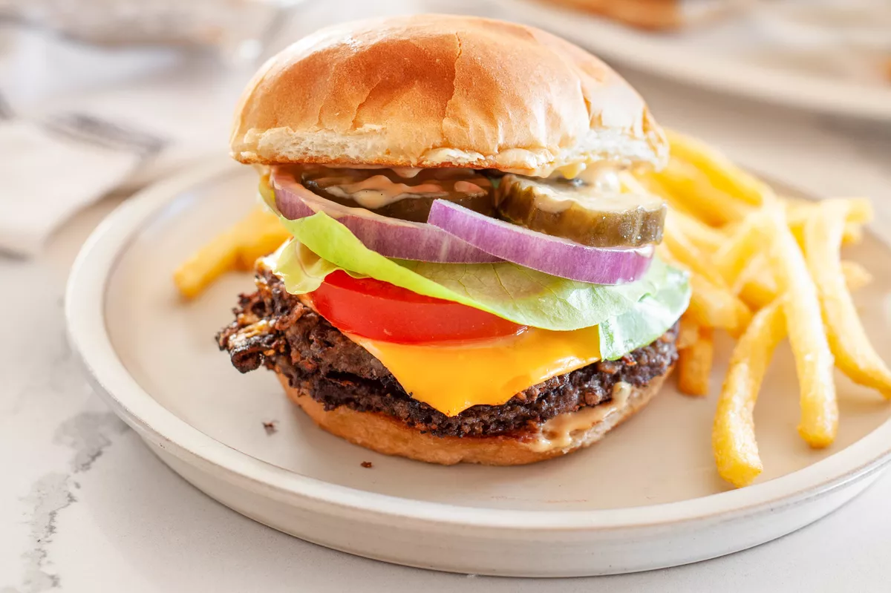

Black Bean Smash Burger

Description
This black bean smash burger recipe gives you all the crispy-edged goodness of a traditional smash burger—sans the meat. Add your favorite toppings for a memorable meal.
Ingredients
- 1 (15-ounce) can black beans
- 8 ounces cremini or baby bella mushrooms
- 1/2 red onion, quartered (save the other half for topping)
- 1/2 jalapeño pepper, seeded
- 6 tablespoons vegetable oil, divided
- 1 tablespoon soy sauce or tamari
- 1 teaspoon garlic powder
- 1 teaspoon ground cumin
- 1 teaspoon hot sauce
- 1/4 teaspoon kosher salt
- 1/4 teaspoon freshly ground black pepper
- 1 1/2 ounces tortilla chips (about 2 cups)
- 1/4 cup mayonnaise or vegan mayonnaise
- 2 tablespoons yellow mustard
- 1 tablespoon ketchup
- 1 tablespoon diced dill pickle
- 1 teaspoon dill pickle juice
- 4 burger buns, split and toasted
- 4 slices American cheese or vegan cheese
- Lettuce, tomatoes, and red onion
- Dill pickle chips
Steps
- Preheat the oven to 350°F. Line a baking sheet with parchment paper. Open the can of black beans, reserve 1/4 cup of the bean liquid, then drain and rinse the beans. Spread the beans onto the prepared baking sheet in an even layer. Bake until dry to the touch and beginning to split, 6 to 8 minutes. Set aside to cool.
- Meanwhile, place the mushrooms, onion, and jalapeño in the bowl of a food processor fitted with the blade attachment. Pulse until finely chopped, about 6 (1-second) pulses (a few larger pieces are okay).
- Heat 2 tablespoons of the oil in a large cast iron skillet over medium heat. Add the chopped vegetables and cook until golden brown and the liquid has evaporated, 10 to 12 minutes.
- Reduce the heat to low. Stir in the soy sauce and scrape up any brown bits from the bottom of the pan. Add the garlic powder, cumin, hot sauce, salt, and pepper and cook for 30 seconds more. Remove from the heat.
- Meanwhile, wipe out the bowl of the food processor and add the tortilla chips. Process until finely ground, about 20 seconds (you should have 1/2 cup). Add the black beans (reserve the baking sheet) and process until mostly broken down, about 5 (1-second) pulses. Add the mushroom mixture and pulse until combined, about 3 (1-second) pulses. If the mixture looks too dry, add up to 2 tablespoons of the reserved bean liquid. The mixture should be on the dry side but hold together when formed without crumbling apart. Taste, and adjust the seasoning with salt and pepper.
- Divide the mixture into 8 portions, a little over 1/4 cup each. Use your palm to flatten each one into 3-inch patties. Line the baking sheet with fresh parchment or plastic wrap and place the patties on top. Refrigerate while you prepare the sauce and toppings.
- Stir together the mayonnaise, mustard, ketchup, chopped pickles, and pickle juice.
- Wipe out the cast iron skillet, if necessary. Heat 2 tablespoons of the oil over medium-high heat until nearly smoking. Place 4 of the patties in the pan and press down in gentle, short presses with a wide, solid spatula to form thin, 4-inch wide patties. If your pan isn’t big enough, cook 2 patties at a time. Cook until the edges are browned and crisp, 2 to 3 minutes. Carefully flip the burgers (they will be fragile), top with the cheese, and cook until the second side is browned and the cheese is melted, 2 to 3 minutes more, lowering the heat as necessary. Transfer the burgers to a plate. Wipe out the skillet, heat the remaining 2 tablespoons of oil, and repeat with the remaining patties.
- Spread the smash sauce onto the bottom and tops of the toasted buns. Transfer 2 patties to each bottom bun and top with tomato, lettuce, sliced red onion, and pickles. These patties are best enjoyed fresh, but leftovers can be refrigerated in an airtight container for up to 4 days.